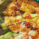
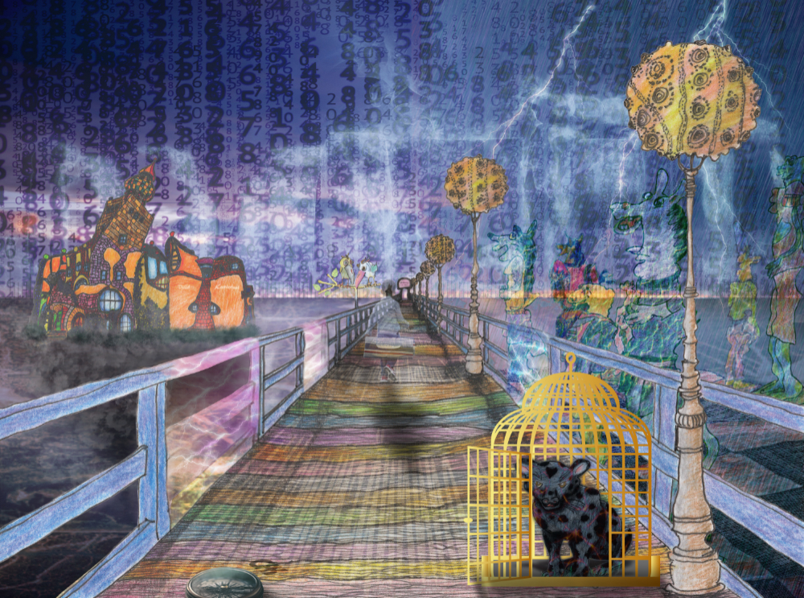
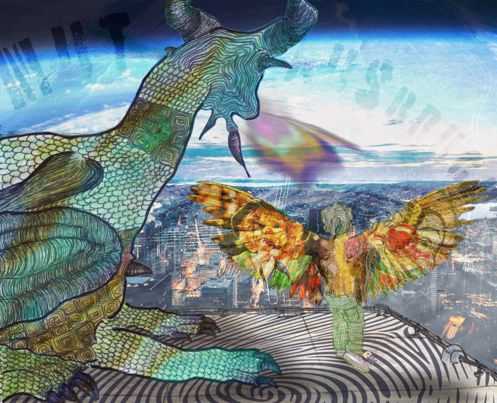
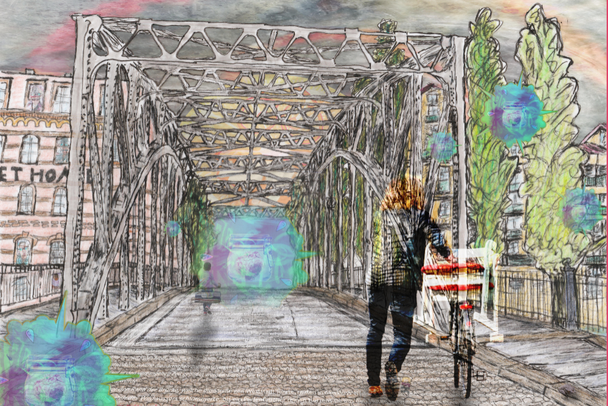

- 

Scribbles, die keine Scribbles mehr sind



| Titel: | In the middle of Nowhere II |
|---|---|
| Entstehung: | Le, Juni 2020 |
| Titel | In the Middle of Nowhere? |
|
Auf Sohlen, die sein Leben bedeuten, tigert der Someone-else in the Middle of Nowhere von links nach rechts und umgekehrt, und wenn es ihn in den Scheitel fährt, dann auch von vorn nach hinten und andersherum, und falls das Wonder im Bra sich dreht, aber nur falls der Wind die Luftrichtung verweht, dann auch diagonal oder vielmehr kreuz und quer durch den Raum, den die Stäbe des Gitters umzäunen. Blind irrt er nicht umher, sondern folgt seinen Herzensgesetzen, jedoch oft kann oder will er die Gattertüren nicht sehen, wie sie offenstehen und mit ihren Klinken ihm ein Hallo zuwinken, um ihm ihre Lebensgeschichten in den Napf einzuschenken und ihn nach draußen in die Freiheit des (Da)Seins lockend zu lenken. Den Someone-else jedoch halten die Stäbe seiner Gitterumzäunung meist heimelig umfangen, nur ab und an tastet er sich mit seiner linken Pfote voran durch die Schatten des Gitters in den Sonnenschein der Freiheit hinein, um das Leben der anderen zu genießen und sich in den Säumen seiner Liebe(n) zu bräunen. Dann aber zieht er sich mit Gewalt wieder zurück, in das Middle seines Nowheres, um nicht alleinsam unter den Anderen zu sein und das Schwein in seinem Herzen zu anzumüttern. © CRK, Le, Oktober 2019 |

| Titel: | Mutausbruch |
|---|---|
| Entstehung: | Le, Juni 2020 |

| Titel: | Konverzstadt |
|---|---|
| Entstehung: | Le, Mai 2020 |
| Titel: | Von den Filterblasen dieser Stadt |
Die Pappeln zitterten im Nordwind, als Unke seinen Drahtesel über die Brücke zur Weststadt schob, weil er den Schatten des kleinen Willgans einholen wollte, um dem Jungen seine eigene Kröte mit dem Namen Blüte feil zu bieten. Blüte nahm viele Filterblasen wahr, welche die Straße entlang in Richtung Weststadt trieben und die sich einander wie die Eier einer Spinne glichen. Sie strebten allesamt wie ferngesteuert einer riesigen Mutterfilterblase entgegen, die über der Weststadt schwebte und alle paar Sekunden eine neue Babyfilterblase gebar. Allesamt hatten sie ihr Herz in einem Einmachglas konserviert und schimmerten mit ihren spitzen und runden kardiografischen Kurvenverlauf wie die Flügel einer Libelle von grünlich bis hin zu violett. Unke bemerkte diese virulente Überschwemmung der Straße in Richtung Weststadt gar nicht. Er war mit seinem Drahtesel beschäftigt, auf den er zwei seiner Narrenschemel geladen hatte, weil er den Auftrag bekommen hatte, die zukünftigen Narrenschergen bei Hofe aus einer Schar von Anwärtern auszuwählen. Er sollte sie in ihrem Sein bilden und wie Ton in seinen immer feuchten Händen formen. Denn er wollte dem Untergang der Limonensonnen entgegenschreiten. Er hasste deren sonnigen Fratzen und liebte die Narrenmaskerade seiner zukünftigen Schergenzöglinge. Seine ehemalige Kröte jedoch bangte um die Säuernis der Limonen, denn sie wusste, dass sauer auch lustig machen konnte und erzählte den wenigen, die es hören wollten, von Unkes Ansinnen und von den allgegenwärtigen Filterblasen, die bald die gesamte Großstadt beherrschen und sie zu ihrem Moloch verwandeln würden. Die freie Kröte, namens Blüte, kapitulierte schließlich vor diesen Gegebenheiten. Denn man hatte sie geschimpft, dass sie unken würde. © CRK, BS, 05/2020 |